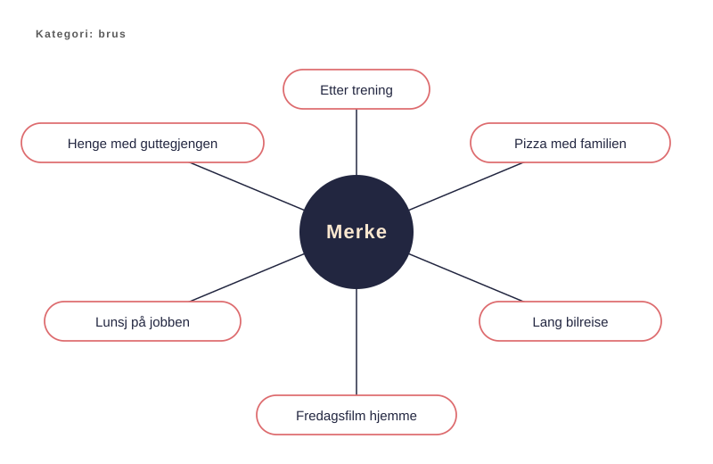

Mental tilgjengelighet
Lesning
Tenk på forrige gang du kjøpte oppvaskmiddel. Det tok neppe mer enn to sekunder. Du sammenlignet ikke lukt, pris og kvalitet i et regneark. Du tok den som dukket opp i hodet først. Zalo.
Dette er mental tilgjengelighet. Det er sannsynligheten for at et merke dukker opp i hodet ditt i øyeblikket du trenger det. Byron Sharp mener i How Brands Grow at dette er den viktigste jobben reklame gjør. Grunnen er enkel. De fleste kjøp skjer raskt og uten mye tankearbeid.
Mental tilgjengelighet er motoren i merkevekst, og et av de mest misforståtte begrepene i bransjen.
Kategoriens inngangsporter
For å bygge mental tilgjengelighet må merket kobles til kategoriens inngangsporter. Det er situasjonene og behovene som får noen til å tenke på kategorien.
For en brusprodusent kan det være å henge med gutta, pizza med familien eller en lang biltur. Hver av dem er en inngangsport til kategorien brus. Hver av dem er en sjanse for merket til å dukke opp først.
Jenni Romaniuk, Sharps kollega ved Ehrenberg-Bass, har utviklet begrepet. Jo flere inngangsporter et merke er knyttet til i hukommelsen, jo oftere blir det hentet fram. Et merke som bare er koblet til én situasjon, kommer sjelden opp i tankene.

Inngangsporter kan måles
I Better Brand Health viser Romaniuk hvordan man måler mental tilgjengelighet. Man lister opp kategoriens inngangsporter og spør potensielle kunder hvilke merker de forbinder med hver av dem.
Svarene gir to tall. Mental penetrasjon er andelen kunder som kobler merket til minst én inngangsport. Mental markedsandel er merkets andel av alle koblingene i kategorien. Begge kan følges over tid. Da vet du om kampanjen faktisk bygger sterkere mental tilgjengelighet.
Feilslutningen
Noen ganger, egentlig ganske ofte, ender jakten på inngangsporter i reklame som viser den vanligste brukssituasjonen. Det kan gi forutsigbar og kjedelig reklame. En inngangsport er en psykologisk kobling, alt som får deg til å tenke på kategorien. Den trenger ikke være den mest opplagte situasjonen vi kommer på. Faktisk bør den ofte ikke være det, fordi dette hindrer oss i å skape oppmerksomhet.
Overveldende mengder reklame viser en hvit kjernefamilie på fire, aller helst på et kjøkken. Det kan være relevant, men det er sjelden minneverdig. Vi må passe på at en relevant inngangsport ikke ender i forglemmelig reklame.
La oss si at du skal lage reklame for kredittkort.
Den mest opplagte brukssituasjonen er at du står i butikken og mangler penger. Eller at du sitter hjemme med en bunke regninger og river deg i håret.
Det kan lønne seg å finne noe mer interessant. En uventet bilreparasjon er en mer emosjonelt ladet inngangsport. Den kan være et bedre koblingspunkt mellom minne og merke.
Dette eksemplet viser også at den mest relevante inngangsporten kan fremstå kynisk eller naiv. Kredittkortreklame som ber oss ta ferien på kreditt, kan provosere på feil måte.
Tendensen til å vise det ordinære i stedet for noe interessant oppstår når vi ikke fullt ut forstår mental tilgjengelighet. Kjedelig reklame er dårlig reklame, fordi den overses. Det blir ingen mental tilgjengelighet om vi ikke engang følger med.
Eksempler
Annonser og kampanjer som viser poenget i praksis.
Kvikk Lunsj, «Tursjokoladen»
Norge · SMFB
En av verdens tydeligste koblinger mellom et merke og en kjøpssituasjon. Fire av de ni Kvikk Lunsjene nordmenn spiser hvert år, gomles i påsken.
Kilder: Kvikk Lunsj (Wikipedia (engelsk). Kilde for tallene om påsken. Bør sjekkes mot Freia)
OLW, «Fredagsmys»
Sverige · Åkestam Holst (filmen fra 2012)
Chipsmerket knyttet seg til fredagskvelden og hjalp ordet inn i språket. Avisomtalene av «fredagsmys» økte fra 459 i 2008 til 2 948 i 2013. I Norge kjenner vi kampanjen som «Ingen Kims, ingen kos».
Kilder: Fram med chipsen – fredagsmys fyller 20 (SVT)
Snickers, «You're not you when you're hungry»
Global 2010 · BBDO
Sult som inngangsport. Snickers vokste 15,9 prosent globalt det første året og økte markedsandelen sin i 56 av 58 markeder.
Kilder: Snickers: You're not you when you're hungry (IPA, gull 2012) · Case study: How fame made Snickers' campaign a success (Campaign)
FINN jobb, «Bli venn med Mandag»
Gull i Smart Tjeneste · ANFO Effekt 2023 · Mediebyå dentsu X
Mandag er dagen folk tenker på ny jobb. Kampanjen knytter FINN jobb til den situasjonen. Tre TV-filmer pluss TikTok og sosiale medier.
Juryen: «Med veldig godt innsiktsarbeid har de skapt et konsept som treffer så godt.» (ANFO)
Kilder: Mandag (Morgenstern) · Bli venn med Mandag i FINNs nye jobbkampanje (Kreativt Forum, 30. august 2022. Omtale ved lansering) · FINN jobb, Mandag 2024 (Morgenstern)
Widerøe, «Hjelp vi har mistet vår merkevare»
Bronse i Smart Tjeneste · ANFO Effekt 2022 · med Brist
Widerøes første TV-konsept på åtte år, med et uttalt mål om å være «top of mind».
Juryen: «Meget godt stykke håndverk innen merkevarebygging, som gir ønsket effekt.» (ANFO)
Kilder: Widerøe går på lufta med nytt reklamekonsept (Kampanje, 25. mars 2021. Omtale ved lansering)
Kritikk av teorien
Sharps rammeverk bygger på flere tiår med kjøpsdata. Det er en styrke, men også en begrensning.
Sharp sier lite om hva som fester seg. For Sharp handler mental tilgjengelighet mye om antall koblinger. Flere inngangsporter gir et større merke. Rory Sutherland ville innvendt at én sterk kobling kan være mer verdt enn mange svake. Sharp forklarer lite om hvorfor noen koblinger huskes og andre glemmes. Mer om det i økt 9.
Lojaliteten er høyere i noen kategorier. I kategorier med høye byttekostnader, som bank og forsikring, bytter folk sjeldnere. Beslutningene er også mer gjennomtenkte. Ehrenberg-Bass har likevel vist at de samme mønstrene gjelder i slike kategorier. Bruk rammeverket der også, men vit at kunden vurderer mer bevisst.
Rammeverket beskriver stabile markeder. Sharps mønstre viser hvordan markeder ser ut når lite endrer seg. De sier mindre om hva som skjer når et merke kommer inn og forandrer kategorien.
Sjekkliste for idévurdering
Bruk listen når du vurderer en kampanje som har som jobb å bygge mental tilgjengelighet.
Prøve 3 spørsmål
3 spørsmål. Velg ett svar per spørsmål. Du får fasit og forklaring når du har svart på alle.
-
Hva mener Sharp er den viktigste jobben reklame gjør?Sharp snur intuisjonen. Reklamens primærjobb er ikke å overtale, men å plante merket i hukommelsen så det dukker opp uoppfordret når kunden står i butikken. Argumenter er sekundært.
-
Et brusmerke vurderer to konsepter. A: en familie på kjøkkenet til middag. B: En gjeng ungdommer på en lang biltur. Hvilket er sterkest i Sharp/Romaniuks forstand?Den vanligste brukssituasjonen er allerede dekket i hukommelsen. Vekst kommer fra å koble merket til flere utløsende øyeblikk. Bilturen åpner en ny port; familien-på-kjøkkenet bare reparerer en gammel.
-
Hva er forskjellen mellom en kategori-inngangsport og en brukssituasjon?Dette er det mest misforståtte skillet i hele Sharp-stoffet. «Tørst etter trening» er en inngangsport — en assosiasjon. Å vise noen som drikker brus er ikke det samme som å skape den.